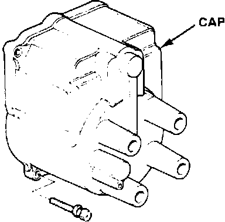

Distributor Cap: Description and Operation
Distributor Cap:

The distributor cap is used to make the connection between the rotor and the correct spark plug wire. High tension current from the rotor is distributed to the towers of the distributor cap at a pre-set sequence and then to the spark plug wires which carry the current on to the spark plugs.